本文接着上一篇写的《Java微服务（二）：服务消费者与提供者搭建》，上一篇文章主要讲述了消费者与服务者的搭建与简单的实现。其中重点需要注意配置文件中的几个坑。
本章节介绍一些零散的内容：服务的负载均衡，序列化和熔断
1.服务负载均衡
负载均衡可分为软件负载均衡和硬件负载均衡。在我们日常开发中，一般很难接触到硬件负载均衡。但软件负载均衡还是可以接触到的，比如 Nginx。dubbo提供的也是软负载。
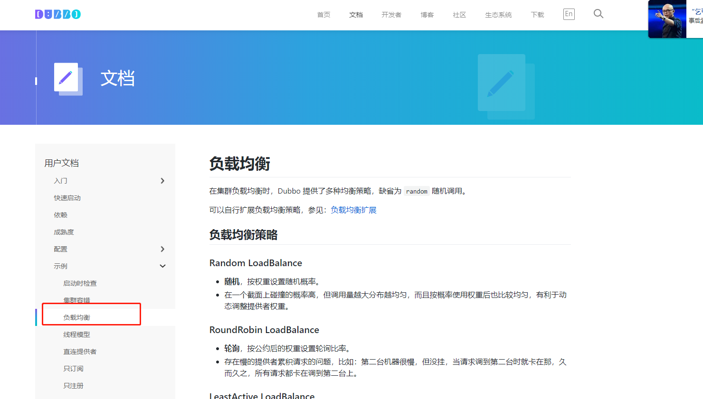
详细内容可以阅读dubbo官网关于负载均衡的介绍，这里总结下负载均衡的方式：
RandomLoadBalance 是加权随机算法的具体实现，它的算法思想很简单。假设我们有一组服务器 servers = [A, B, C]，他们对应的权重为 weights = [5, 3, 2]，权重总和为10。那么就有5/10的请求达到A服务器上，3/10和2/10分别达到B和C上。只要随机数生成器产生的随机数分布性很好，在经过多次选择后，每个服务器被选中的次数比例接近其权重比例。当调用次数比较少时，Random 产生的随机数可能会比较集中，此时多数请求会落到同一台服务器上。
每个服务提供者对应一个活跃数 active。初始情况下，所有服务提供者活跃数均为0。每收到一个请求，活跃数加1，完成请求后则将活跃数减1，在服务运行一段时间后，性能好的服务提供者处理请求的速度更快，因此活跃数下降的也越快，此时这样的服务提供者能够优先获取到新的服务请求、这就是最小活跃数负载均衡算法的基本思想，目前此算法还引入了权重值。
首先根据 ip 或者其他的信息为缓存节点生成一个 hash，并将这个 hash 投射到 [0, 232 - 1] 的圆环上。当有查询或写入请求时，则为缓存项的 key 生成一个 hash 值。然后查找第一个大于或等于该 hash 值的缓存节点，并到这个节点中查询或写入缓存项。如果当前节点挂了，则在下一次查询或写入缓存时，为缓存项查找另一个大于其 hash 值的缓存节点即可。
所谓轮询是指将请求轮流分配给每台服务器。举个例子，我们有三台服务器 A、B、C。我们将第一个请求分配给服务器 A，第二个请求分配给服务器 B，第三个请求分配给服务器 C，第四个请求再次分配给服务器 A。这个过程就叫做轮询。轮询是一种无状态负载均衡算法，实现简单，适用于每台服务器性能相近的场景下。加权轮询是将服务器赋一个权值，然后按照该权值进行轮训。
代码构建,本例使用轮训算法做demo
直接在yml配置文件中添加loadbalance注解就可以
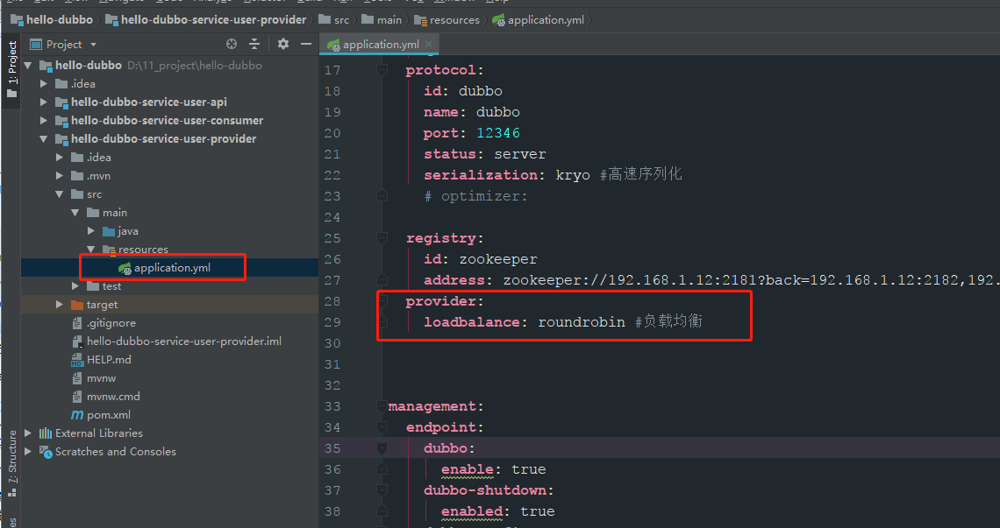
开启2个服务提供者，并且使用服务消费者消费，查看日志
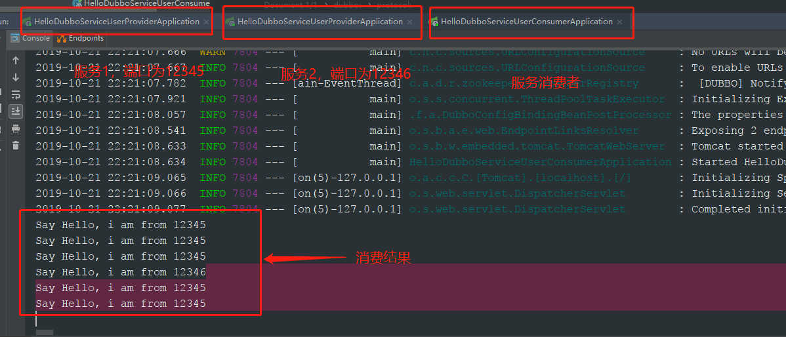
2.序列化
Dubbo 中支持的序列化方式：
dubbo自带的序列化方式不成熟，而json和java序列化性能不理想。dubbo可以使用hessian2序列化，但是hessian2是跨语言的，没有单独对java语言做优化，所以很多单独给java提供优化的工具性能比hessian2要好。我们为 dubbo 引入 Kryo 和 FST 这两种高效 Java 序列化实现，来逐步取代 hessian2。
dubbo有关序列化的实例如下：
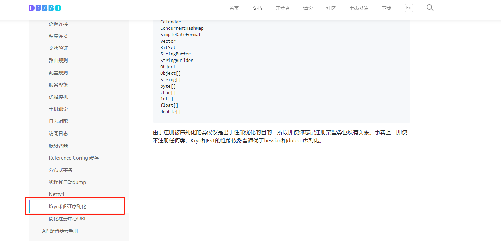
代码构建，首先增加依赖
1 <dependency>
2 <groupId>de.javakaffee</groupId>
3 <artifactId>kryo-serializers</artifactId>
4 <version>0.42</version>
5 </dependency>
6 <!-- https://mvnrepository.com/artifact/org.springframework.cloud/spring-cloud-starter-hystrix -->
7 <!-- https://mvnrepository.com/artifact/org.springframework.cloud/spring-cloud-starter-netflix-hystrix -->
8 <dependency>
9 <groupId>org.springframework.cloud</groupId>
10 <artifactId>spring-cloud-starter-netflix-hystrix</artifactId>
11 <version>2.0.1.RELEASE</version>
12 </dependency>
13 <!-- https://mvnrepository.com/artifact/org.springframework.cloud/spring-cloud-starter-netflix-hystrix-dashboard -->
14 <dependency>
15 <groupId>org.springframework.cloud</groupId>
16 <artifactId>spring-cloud-starter-netflix-hystrix-dashboard</artifactId>
17 <version>2.0.1.RELEASE</version>
18 </dependency>在配置文件中增加配置的属性即可：
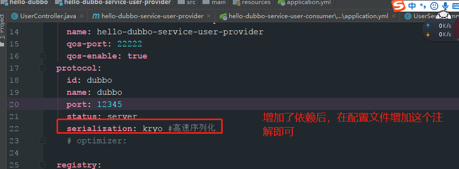
此时序列化配置完成，以下总结了常见序列化方式的性能
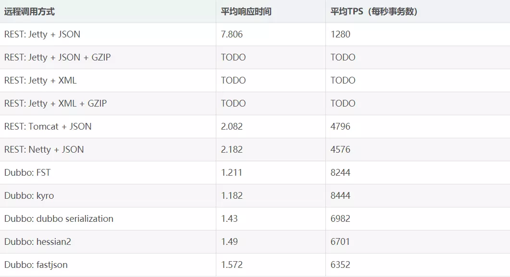
3.熔断
由于网络和自身的原因，RPC之间的调用并不能保证100%可用，如果服务器产生了宕机，同时又有大量的请求过来，就会出现雪崩，为了解决此问题，业界提出了熔断。熔断器打开后，为了避免连锁故障，通过 fallback 方法可以直接返回一个固定值。此时fallback中可以做很多逻辑处理，比喻日志或者邮件通过开发人员，及时对服务器进行问题排查，降低风险度。
代码构建，首先增加依赖
1 <!-- https://mvnrepository.com/artifact/org.springframework.cloud/spring-cloud-starter-hystrix -->
2 <!-- https://mvnrepository.com/artifact/org.springframework.cloud/spring-cloud-starter-netflix-hystrix -->
3 <dependency>
4 <groupId>org.springframework.cloud</groupId>
5 <artifactId>spring-cloud-starter-netflix-hystrix</artifactId>
6 <version>2.0.1.RELEASE</version>
7 </dependency>
8 <!-- https://mvnrepository.com/artifact/org.springframework.cloud/spring-cloud-starter-netflix-hystrix-dashboard -->
9 <dependency>
10 <groupId>org.springframework.cloud</groupId>
11 <artifactId>spring-cloud-starter-netflix-hystrix-dashboard</artifactId>
12 <version>2.0.1.RELEASE</version>
13 </dependency>其中第二个依赖是在熔断仪表盘中使用的。具体代码和相关解释如下如下：
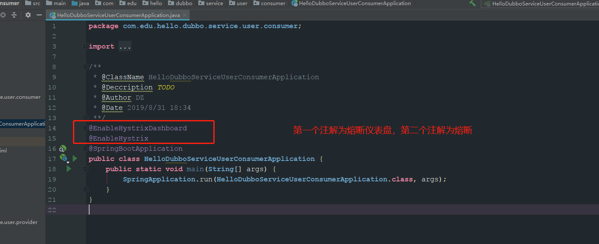
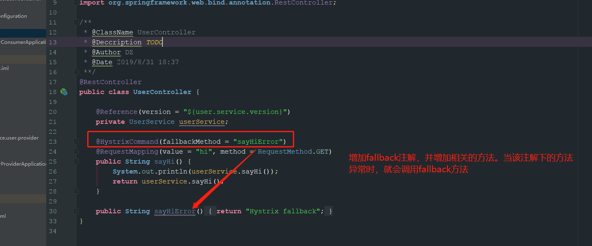
熔断仪表盘的配置，这里需要注意spring boot2和1的配置是有区别的，具体可以参考官网文档
1 package com.edu.hello.dubbo.service.user.consumer.config;
2
3 import com.netflix.hystrix.contrib.metrics.eventstream.HystrixMetricsStreamServlet;
4 import org.springframework.boot.web.servlet.ServletRegistrationBean;
5 import org.springframework.context.annotation.Bean;
6 import org.springframework.context.annotation.Configuration;
7
8 /**
9 * @ClassName HystrixDashboardConfiguration
10 * @Deccription TODO
11 * @Author DZ
12 * @Date 2019/9/3 23:10
13 **/
14 @Configuration
15 public class HystrixDashboardConfiguration {
16 @Bean
17 public ServletRegistrationBean getServlet() {
18 HystrixMetricsStreamServlet streamServlet = new HystrixMetricsStreamServlet();
19 ServletRegistrationBean registrationBean = new ServletRegistrationBean(streamServlet);
20 registrationBean.setLoadOnStartup(1);
21 registrationBean.addUrlMappings("/hystrix.stream");
22 registrationBean.setName("HystrixMetricsStreamServlet");
23 return registrationBean;
24 }
25 }启动服务，查看结果。这里只启动了服务消费者，没有启动服务提供者，制造服务超时。
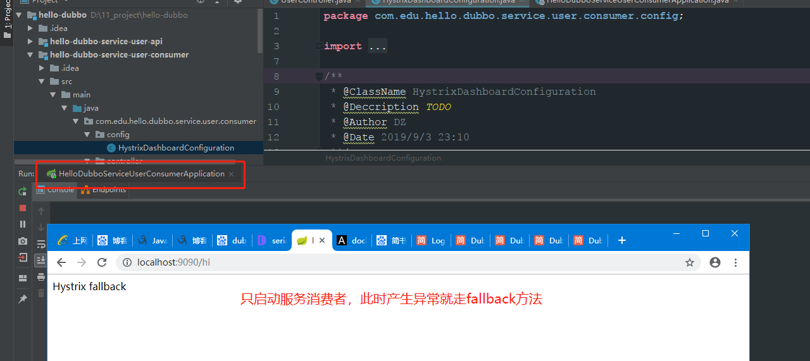
访问http://localhost:9090/hystrix查看熔断界面，其他详细信息可以查看详细信息，其中仪表盘的访问地址是来自于config中，仪表盘如下：
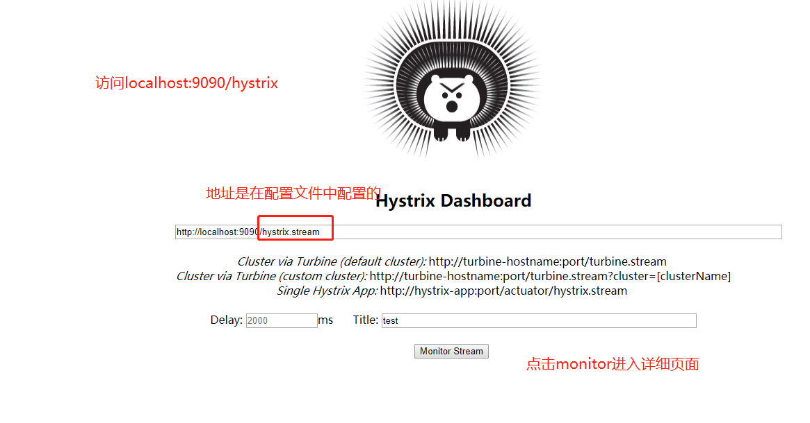
访问http://localhost:9090/hystrix.stream查看熔断仪表盘界面，更加详细查看熔断相关的信息
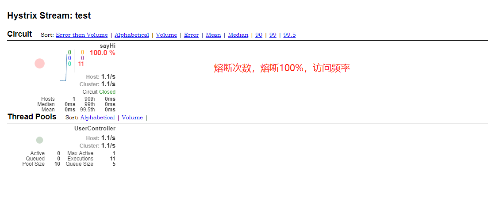
仪表盘中相关参数解释如下：
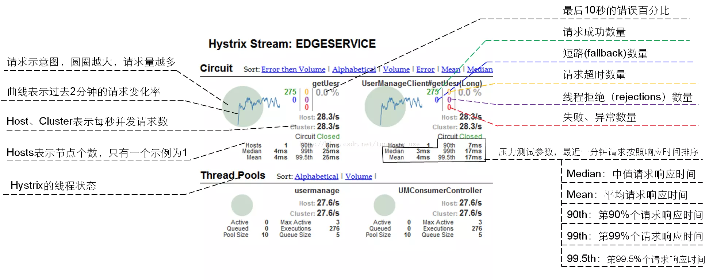